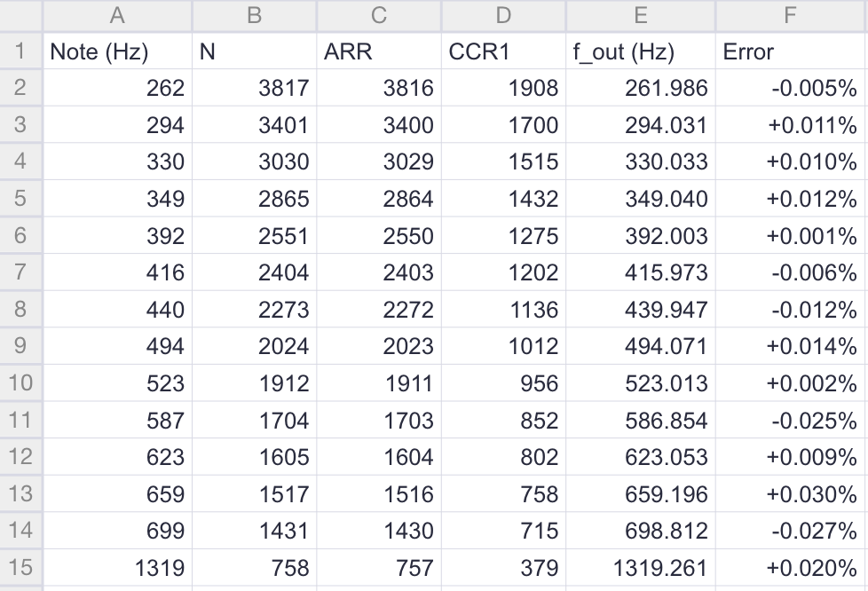
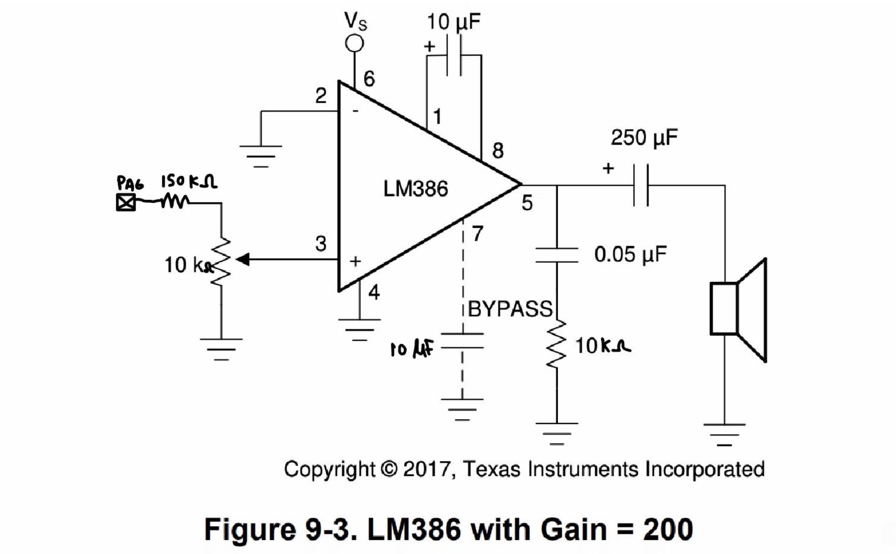

Lab 4: Digital Audio
Introduction
In lab 4, we were tasked with using the STM32L432KC microcontroller to play music on an external peripheral. The MCU reads a list of notes, where each note gives a pitch in Hz and a duration in ms, and generates the matching sequence of square waves on a GPIO pin. A pitch of 0 Hz is a rest, and a duration of 0 ms marks the end of the song. The GPIO pins cannot supply enough current to drive a speaker directly, so the square wave passes through an LM386 audio amplifier before reaching an 8 Ω speaker.
Design and Testing Methodology
Starting off, I configured the system clock so that every timer calculation would rest on a known frequency. I selected the 4 MHz MSI oscillator (MSI range 6) as the system clock and set the AHB, APB1, and APB2 prescalers to /1. When the APB prescaler is 1, the timer clock equals the APB clock. Both timers in this design therefore run from a 4 MHz clock. This is also the chip’s reset state, but setting it explicitly in configureSystemClock() guarantees the math holds even if startup code changes the clock.
For pitch generation, I used TIM16 in PWM mode 1, with its channel 1 output routed to pin PA6. I set the prescaler so the counter runs at 1 MHz, which gives 1 µs of resolution per count: \(f_CNT = f_CLK / (PSC + 1) = 4 MHz / (3 + 1) = 1 MHz\)
For note durations, I used TIM15 as a blocking delay timer. I set its prescaler so the counter runs at 10 kHz, giving 0.1 ms per count: \(f_CNT = 4 MHz / (399 + 1) = 10 kHz\)
The update interrupt flag (UIF) is set after ARR + 1 counts, so the ARR for a duration of d milliseconds is: \(ARR = 10 × d − 1\)
For the hardware, I used an LM386 amplifier in its default gain-of-200 configuration. The LM386 datasheet lists an absolute maximum input of ±0.4 V, but the MCU outputs a 3.3 V square wave, so the signal has to be attenuated before it reaches the amplifier. A 150 kΩ series resistor feeds a 10 kΩ volume potentiometer, and the pot’s wiper drives LM386 pin 3.
Before connecting the speaker, I verified the PA6 and LM386 outputs on the oscilloscope to confirm the signal frequency and amplitude, as the lab instructions recommended.
Technical Documentation
Calculations
Series resistor: At full volume, the LM386 pin 3 sees the whole 10 kΩ potentiometer in parallel with the amplifier’s 50 kΩ input resistance:
\(R_eq = 10 kΩ ∥ 50 kΩ = 8.33 kΩ\)
A 5 V supply lets the LM386 output swing about 4 V peak-to-peak. With a gain of 20, the input should therefore stay at or below \(4 V / 20 = 0.2 V\). Solving for the series resistor:
\(R_S ≥ R_{eq} × (3.3 V / 0.2 V − 1) = 8.33 kΩ × 15.5 = 129 kΩ\)
I chose the next standard value, 150 kΩ. The maximum input is then:
\(V_in,max = 3.3 V × 8.33 kΩ / (150 kΩ + 8.33 kΩ) = 0.174 V\)
This is below both the clipping point and the 0.4 V absolute maximum. The current drawn from PA6 is only \(3.3 V / 158.3 kΩ = 20.8 µA\).
Speaker gain: with pins 1 and 8 open, the internal resistors set the gain:
\(A_v = (2 × 15 kΩ) / (150 Ω + 1.35 kΩ) = 20\)
The capacitor and the 8 Ω speaker form a high-pass filter:
\(f_c = 1 / (2π × 8 Ω × 250 µF) = 79.6 Hz\)
The lowest note in Für Elise is 262 Hz, well above this cutoff. Without the capacitor, the LM386’s 2.5 V DC output level would push \(2.5 V / 8 Ω = 0.31 A\) of DC current through the speaker.
Timer Calculations: Pitch accuracy at 220 Hz and 1000 Hz is the goal. For 220 Hz:
\(N = (1,000,000 / 220) = (4545.45) = 4545, so ARR = 4544\) \(f_{out} = 1,000,000 / 4545 = 220.022 Hz\) \(Error = (220.022 − 220) / 220 = +0.010%\)
For 1000 Hz:
\(N = 1,000,000 / 1000 = 1000\), so ARR = 999 \(f_out = 1000.000 Hz\), an error of 0%.
Both of these are well within the required 1%.
Minimum and maximum frequency:
The period must fit in the 16-bit ARR, so N ≤ 65536: \(f_min = 1 MHz / 65536 = 15.26 Hz\)
The code accepts whole-number frequencies from 16 Hz up. Rounding N to a whole count is off by at most half a count, so the frequency error is at most 0.5 / N. Requiring this to be at most 1% gives N ≥ 50: \(f_max = 1 MHz / 50 = 20 kHz\)
The hardware could produce up to 500 kHz (N = 2), but not within 1%, so the code plays frequencies above 20 kHz as silence.
Minimum and maximum duration:
The API works in whole milliseconds, so the minimum duration is 1 ms (ARR = 9). The hardware minimum is 0.2 ms, since ARR = 1 is the smallest value that does not block the counter. One timer cycle can last at most:
\(t_max = 65536 / 10 kHz = 6.5536 s\)
Since longer delays are split into chunks, the overall limit is set by the int duration type: 2³¹ − 1 ms, which is about 25 days.
All Für Elise notes:
The table below applies the same formulas as the 220 Hz example to every note in the score. The 294 Hz row is the one note from Ode to Joy that does not appear in Für Elise.
Sheets was used to conduct these calculations, but an example calculation is as follows: $(659 Hz): f_CNT = 4,000,000 / (3 + 1) = 1,000,000 Hz; N = round(1,000,000 / 659) = round(1517.45) = 1517; ARR = 1517 − 1 = 1516; CCR1 = 1517 / 2 = 758; f_out = 1,000,000 / 1517 = 659.196 Hz; Error = (659.196 − 659) / 659 = +0.030%, well within 1%.
[Fig 1. Table of Fur Elise + Ode to Joy note calculations]

It is not effective to just check 220 Hz and 1000 Hz. The error at any single frequency depends on how the rounding happens to land. 1000 Hz divides 1 MHz exactly and shows 0% error, which says nothing about the notes around it. The worst-case error bound, 0.5 × f / 10⁶, grows with frequency, so it must be checked at the highest note. Für Elise’s highest note is 1319 Hz, above 1000 Hz, where the bound is 0.5 / 757.65 = 0.066%. At the low end, the concern is whether the period fits in the timer. The lowest note (262 Hz) needs only 3817 counts, far below the 65536 limit. Together, these two checks cover every note in the song.
Schematic
[Fig 2. LM386 with Gain = 200. Includes 10k ohm linear potentiometer LM386 power amp, and a 1w speaker]

Results and Discussion
The design met all of the intended objectives. Für Elise played at the correct tempo, the rests were silent for their full durations, and the potentiometer controlled the volume smoothly across its full range. The extra composition, Ode to Joy, also played correctly. Each of its notes is followed by a 20 ms rest, so that repeated notes sound as separate notes instead of blending into one long tone.
The design meets all of the requirements in the specification in the following ways:
Hardware: Für Elise plays from the provided starter code with correct durations and rests, through a correctly wired LM386 amplifier. A potentiometer controls the volume, and an extra composition plays after Für Elise. Software: The design uses two timer peripherals (TIM15 and TIM16), accessed through #define macros and register structs in the format from class. It never divides by zero, and it rejects frequencies it cannot produce accurately. Documentation: The calculations above relate pitches and durations to the timer configuration, show 220 Hz and 1000 Hz within 1%, give the minimum and maximum duration and frequency, and show every note in Für Elise within 1%.
All frequency and duration calculations assume the nominal 4 MHz MSI clock. The MSI oscillator’s own tolerance adds a small error on top of these figures. In the future, locking the MSI to the Nucleo’s 32.768 kHz LSE crystal (MSI PLL mode) would make the pitches track a more accurate reference.
Conclusion
The design met all of the requirements. It successfully plays Für Elise and Ode to Joy at the correct pitches and tempo, with rests played as silence. The two-timer approach worked well: TIM16 generates each pitch in hardware to within 0.03%, and TIM15 times each note exactly. The LM386 circuit drives the speaker with smooth volume control. This lab took me about 9 hours to complete in its enirety.
AI Prototype
`default_nettype none
For the STM32L432KC, I would use TIM2 in PWM output mode, with TIM2_CH1 on PA0. TIM2 is a particularly convenient choice because it is a 32-bit general-purpose timer, has multiple GPIO alternate-function outputs, and its large counter gives you plenty of flexibility over the 220 Hz–1 kHz range.
1. Timer choices
The L432 has several timer types:
Timer Type GPIO waveform output? Recommendation
TIM2 32-bit general purpose Yes Best general choice
TIM1 16-bit advanced Yes Good, but more features than needed
TIM15 16-bit general purpose Yes Good
TIM16 16-bit Yes Good
TIM17 16-bit Yes Good
TIM6 Basic No Not suitable for directly driving GPIO
TIM7 Basic No Not suitable for directly driving GPIO
For a simple frequency generator, TIM2_CH1 → PA0 is probably the cleanest arrangement.
TIM2 can generate the waveform completely in hardware, so the CPU does not have to toggle the GPIO at every cycle.
Basic PWM frequency formula
For a timer running from timer clock \(f_{TIM}\):
$$ f_{PWM} = \frac{f_{TIM}} {(PSC+1)(ARR+1)} $$
where:
PSC = prescaler register
ARR = auto-reload register
f_TIM = timer input clock
f_PWM = desired output frequency
For example, suppose you configure the STM32 clock so that TIM2 receives 80 MHz.
You could choose:
$$ PSC=79 $$
which gives a timer counter frequency of:
$$ f_{CNT}=\frac{80\,MHz}{79+1}=1\,MHz $$
Now the timer increments once every microsecond.
The required ARR becomes:
$$ ARR=\frac{1\,MHz}{f_{OUT}}-1 $$
So for 1 kHz:
$$ ARR=\frac{1,000,000}{1000}-1=999 $$
and for 220 Hz:
$$ ARR=\frac{1,000,000}{220}-1 \approx4544.45 $$
Since ARR must be an integer, you would use 4544, producing approximately:
$$ f=\frac{1,000,000}{4545} \approx220.022\,Hz $$
That's an error of only about 0.01%.
Generating a 50% duty-cycle waveform
For a square wave, you probably want approximately 50% duty cycle.
In PWM mode:
$$ Duty=\frac{CCR1}{ARR+1} $$
so approximately 50% duty cycle is obtained with:
$$ CCR1=\frac{ARR+1}{2} $$
For example, at 1 kHz:
PSC = 79
ARR = 999
CCR1 = 500
giving approximately 50% duty cycle.
At 220 Hz:
PSC = 79
ARR = 4544
CCR1 = 2272
4. Why TIM2_CH1 → PA0 is convenient
PA0 has an alternate-function connection to TIM2_CH1.
Instead of doing:
GPIOA->ODR ^= ...
in software, you configure PA0 for the TIM2 alternate function and let the timer peripheral drive it.
Conceptually:
TIM2
|
Channel 1
|
v
TIM2_CH1
|
v
PA0
|
v
GPIO output
The timer autonomously generates:
┌─────┐ ┌─────┐
│ │ │ │
─────┘ └─────┘ └─────
with the frequency determined by PSC and ARR.
This is substantially better than using an interrupt to toggle PA0 because the hardware-generated signal has much less jitter and doesn't consume CPU time every half-cycle.
Registers you need
For a bare-metal implementation, the important registers are roughly:
RCC
Enable the timer peripheral:
RCC->APB1ENR1 |= RCC_APB1ENR1_TIM2EN;
You also need to enable the GPIOA peripheral:
RCC->AHB2ENR |= RCC_AHB2ENR_GPIOAEN;Once the LLM responds, review the answer and compare it with your decision-making process.
`default_nettype wireFor this AI Prototype, I used a free version of ChatGPT, and I did not sign into an account. I entered in the provided prompt and it gave me a result. The conceptual explanation was fairly strong: the PWM frequency formula, the worked 220 Hz example with error analysis, and the argument for hardware PWM over ISR toggling were all correct and clearly presented. The response fell short on specifics that matter for bare-metal code. It listed TIM17, which isn’t on the L432KC, and it assumed an 80 MHz timer clock without mentioning that the chip boots at 4 MHz on MSI.